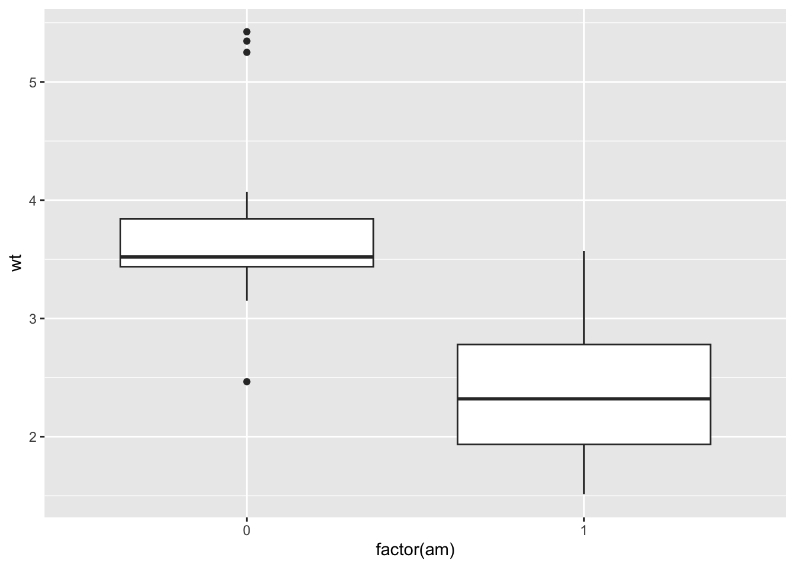
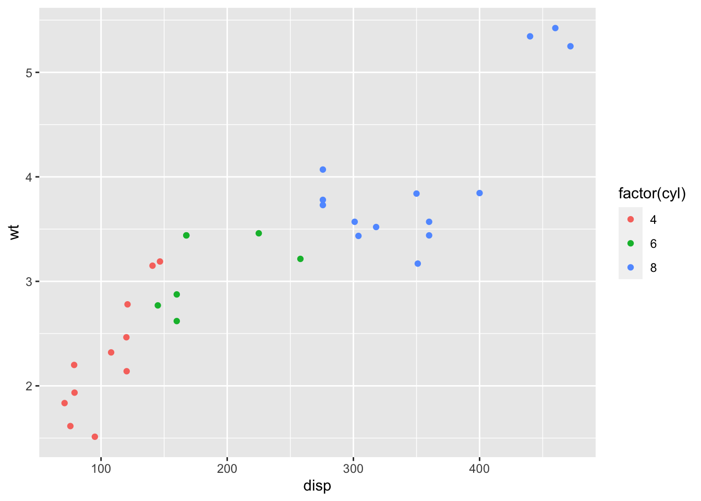
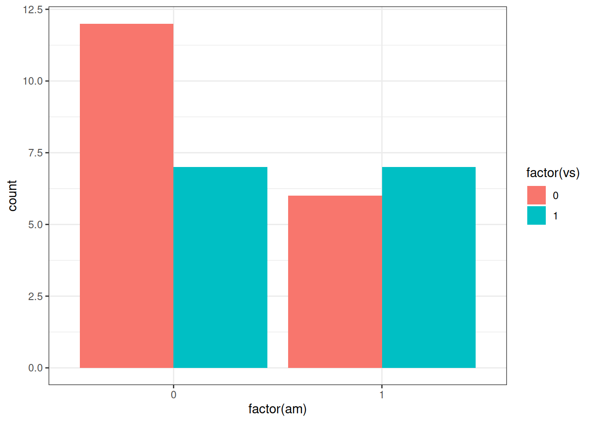
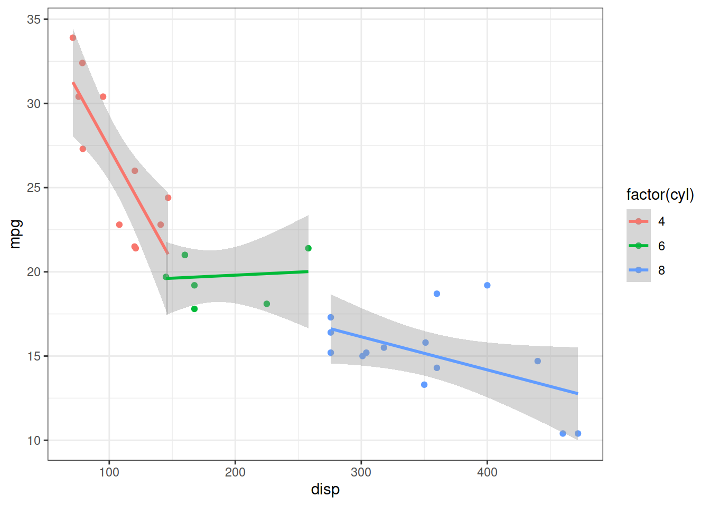
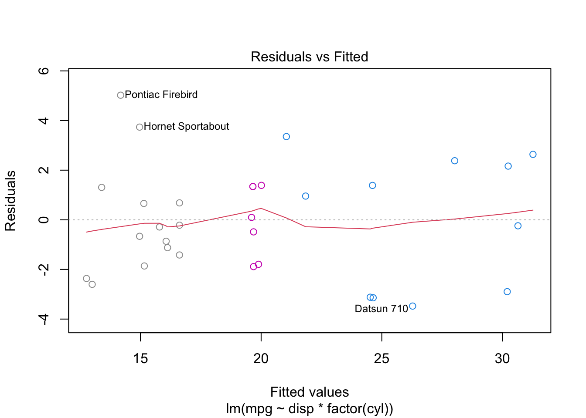
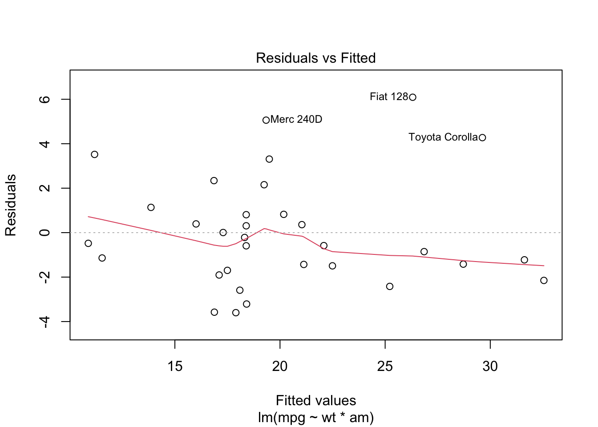

library(ggplot2)
theme_set(theme_bw())18 L19: Analysis of MTCars
18.1 Exploratory Data Analysis
Understanding Data
What do the column names mean?
The help file gives a (very) brief description. I spent a few minutes just looking at the descriptions and trying to guess what relationships I might find.
Overall, most of the predictors are trying to answer the question “Is this a powerful car?”
Plotting the Data
From a pairs plot (pairs(mtcars), which I have not included to reduce the amount of output):
- Only 1 car has carb = 6, 1 has carb = 8
- wt and drat are (-ively) correlated
- disp and hp
- disp and drat (-ive)
- disp and wt
- hp and wt
- hp and qsec
wt and disp are clearly multicollinear, and they’re measuring the same thing so I might want to include just one of them.
Patterns in the Predictors
In the following code, I tried x as am, cyl, gear, and carb. The y axis was wt, disp, drat, and qsec. I essentially tried every combination of these and wrote down the most interesting patterns.
# Continuous versus categorical
ggplot(mtcars) +
aes(x = factor(am), y = wt) +
geom_boxplot()
- wt is different across categories of am, cyl, carb, gear (all positive)
- disp has same relationships
- hp has same relationships, except 4 gear cars have lower hp than 3 and 5 gear cars
- drat has opposite relationships
I did something similar with the following code, checking every combination of all relevant predictors and writing down anything that stuck out to me.
# Continuous vs. continuous
ggplot(mtcars) +
aes(x = disp, y = wt, colour = factor(cyl)) +
geom_point()
- Clear separation between disp and wt when coloured by am or cyl.
- In other words, there are distinct groups. This probably means that one of the continuous predictors has all of the information necessary, and it won’t be necessary to include an interaction between continuous predictors (it rarely is).
- Otherwise, there are not many relationships that might be present.
The following plot was also used with all combinations of categorical predictors.
# categorical variables
ggplot(mtcars) +
aes(x = factor(am), fill = factor(vs)) +
geom_bar(position = "dodge")
- Some kind of “correlation” between am and cyl.
- Measuring something similar, but from different perspectives.
- Very little relation between am and vs - they’re measuring different things.
- Might be worth checking models where am is switched with vs.
Conclusions
Most things are measuring “how powerful is this car”, so we should just choose the ones that make sense to us and check a few categorical predictors.
wt and disp make the most sense as measures for mpg, and am and cyl also make some sense. I’ll try switching out some of the other predictors, but I expect that the final model will either be wt*am or disp*cyl.
18.2 More EDA: Relationships with the Response / Interactions
Now we’re finally looking at mpg!
ggplot(mtcars) +
aes(y = mpg, x = disp, colour = factor(cyl)) +
geom_point() +
geom_smooth(method = "lm", se = TRUE, formula = y ~ x)
From looking at many many plots, I propose the following candidate models:
- mpg versus disp * cyl
- mpg versus wt * am (cyl?)
- mpg versus wt * vs (maybe not an interaction)
- mpg versus wt * gear?
I had also considered including qsec, but a plot of mpg versus qsec with colours from cyl revealed that cyl explains the relationship; if we include cyl, then the slope for mpg versus qsec is 0. The same thing happens with drat, so cyl is probably enough to include in the model rather than either qsec or drat.
18.3 Modelling
Let’s test out our models!
Again, to reduce the amount of output I have to wade through, I changed the following code a bunch and left it at something meaningful to my final analysis.
dispmodel <- lm(mpg ~ disp * factor(cyl), data = mtcars)
par(mfrow = c(2,2))
plot(dispmodel, col = mtcars$cyl)
- Residuals versus fitted looks good
- QQ norm looks great! For this small of a data set, we don’t expect much from the qq-plot, so this is actually very nice.
- Scale-Location has a slight U shape, which isn’t ideal. There may still be a predictor that’s worth including.
- There’s a high influence point. This is likely due to the interaction between cyl and disp.
- When we have this kind of interaction, there are essentially three lines, each with fewer observations. It is much easier for a point to be influential with interaction present.
wtmodel <- lm(mpg ~ wt * am, data = mtcars)
par(mfrow = c(2,2))
plot(wtmodel)
- First plot looks good!
- QQplot has some heavy tails - not bad, but not ideal.
dispmodelwas better. - Scale-location is great!
- No high leverage points.
Both models are good in different ways. Let’s check their summaries.
summary(dispmodel)
Call:
lm(formula = mpg ~ disp * factor(cyl), data = mtcars)
Residuals:
Min 1Q Median 3Q Max
-3.4766 -1.8101 -0.2297 1.3523 5.0208
Coefficients:
Estimate Std. Error t value Pr(>|t|)
(Intercept) 40.87196 3.02012 13.533 2.79e-13 ***
disp -0.13514 0.02791 -4.842 5.10e-05 ***
factor(cyl)6 -21.78997 5.30660 -4.106 0.000354 ***
factor(cyl)8 -18.83916 4.61166 -4.085 0.000374 ***
disp:factor(cyl)6 0.13875 0.03635 3.817 0.000753 ***
disp:factor(cyl)8 0.11551 0.02955 3.909 0.000592 ***
---
Signif. codes: 0 '***' 0.001 '**' 0.01 '*' 0.05 '.' 0.1 ' ' 1
Residual standard error: 2.372 on 26 degrees of freedom
Multiple R-squared: 0.8701, Adjusted R-squared: 0.8452
F-statistic: 34.84 on 5 and 26 DF, p-value: 9.968e-11summary(wtmodel)
Call:
lm(formula = mpg ~ wt * am, data = mtcars)
Residuals:
Min 1Q Median 3Q Max
-3.6004 -1.5446 -0.5325 0.9012 6.0909
Coefficients:
Estimate Std. Error t value Pr(>|t|)
(Intercept) 31.4161 3.0201 10.402 4.00e-11 ***
wt -3.7859 0.7856 -4.819 4.55e-05 ***
am 14.8784 4.2640 3.489 0.00162 **
wt:am -5.2984 1.4447 -3.667 0.00102 **
---
Signif. codes: 0 '***' 0.001 '**' 0.01 '*' 0.05 '.' 0.1 ' ' 1
Residual standard error: 2.591 on 28 degrees of freedom
Multiple R-squared: 0.833, Adjusted R-squared: 0.8151
F-statistic: 46.57 on 3 and 28 DF, p-value: 5.209e-11The \(R^2\) for dispmodel is a fair bit higher (although there’s no standard for how much an \(R^2\) should change, so this might not be a meaningful difference). As we saw in class, the \(R^2\) is based on the same quantities as the F-test for different models.
anova(dispmodel, wtmodel)Analysis of Variance Table
Model 1: mpg ~ disp * factor(cyl)
Model 2: mpg ~ wt * am
Res.Df RSS Df Sum of Sq F Pr(>F)
1 26 146.23
2 28 188.01 -2 -41.773 3.7136 0.03814 *
---
Signif. codes: 0 '***' 0.001 '**' 0.01 '*' 0.05 '.' 0.1 ' ' 1The models fit significantly differently. Which one fits better?
# MSE values
summary(dispmodel)$sigma[1] 2.371581summary(wtmodel)$sigma[1] 2.591247dispmodel has a higher \(R^2\) and a lower MSE, so it seems to be the winner.
From the pairs plot, I saw that disp has a slight relationship with other continuous predictors, and the scale-location plot wasn’t perfect. Perhaps another predictor will help?
I can do this with the magical update() function. The ~ . + hp notation means the response versus (~) everything ., then add hp. The ~ means “versus” (with the response on the left, which isn’t allowed to change in this case, and the predictors on the right), and the . means “everything”, which in this case refers to everything that was already in the model. The form lm(mpg ~ ., data = mtcars) will fit mpg against everything else it sees in the mtcars dataset.
summary(update(dispmodel, ~ . + hp))
Call:
lm(formula = mpg ~ disp + factor(cyl) + hp + disp:factor(cyl),
data = mtcars)
Residuals:
Min 1Q Median 3Q Max
-3.3442 -1.7647 0.0994 1.4480 4.4796
Coefficients:
Estimate Std. Error t value Pr(>|t|)
(Intercept) 41.53521 3.04752 13.629 4.48e-13 ***
disp -0.13037 0.02798 -4.660 9.00e-05 ***
factor(cyl)6 -19.95406 5.48572 -3.637 0.001249 **
factor(cyl)8 -16.99535 4.83011 -3.519 0.001685 **
hp -0.01410 0.01184 -1.191 0.245018
disp:factor(cyl)6 0.12975 0.03685 3.521 0.001675 **
disp:factor(cyl)8 0.11199 0.02946 3.801 0.000824 ***
---
Signif. codes: 0 '***' 0.001 '**' 0.01 '*' 0.05 '.' 0.1 ' ' 1
Residual standard error: 2.353 on 25 degrees of freedom
Multiple R-squared: 0.8771, Adjusted R-squared: 0.8476
F-statistic: 29.74 on 6 and 25 DF, p-value: 3.199e-10I checked qsec, drat, and hp, and none seemed worth including in the model. I’ll just leave it as is.
To interpret the model we must be careful about the interaction term!
\[ mpg = \begin{cases} \beta_0 + \beta_1 disp & \text{if }cyl == 4\\ (\beta_0 + \beta_2) + (\beta_1 + \beta_4) disp & \text{if }cyl == 6\\ (\beta_0 + \beta_3) + (\beta_1 + \beta_5) disp & \text{if }cyl == 8\\ \end{cases} \]
- For 4 cylinder cars, the baseline mpg is 40 and decreases by 0.135 for each one unit increase in disp.
- For 6 cylinder cars, the baseline mpg is about 21.5 and isn’t really related to the displacement.
- For 8 cylinder cars, the baseline mpg is about 24.5 and decreases by about 0.02 for each one-unit increase in displacement.
- Note that displacement has really large units, so 0.02 over hundreds of one-unit increases is still a lot!